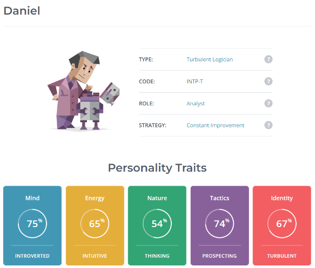
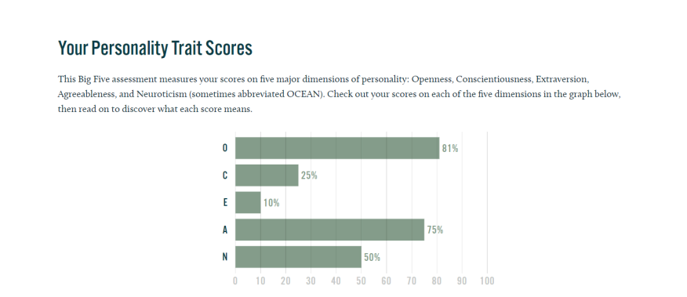
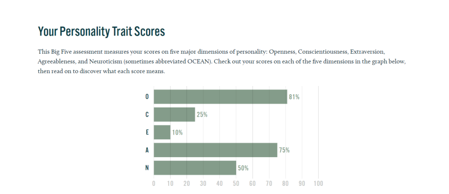
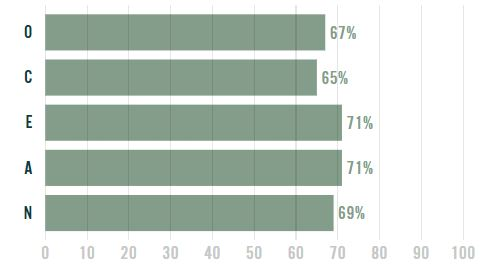
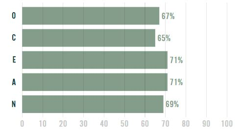
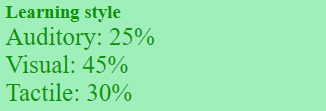
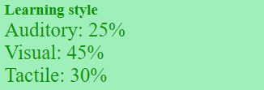

Team Profile
Personal Information
Daniel
Hey! I'm Daniel, and I'm a current 1st year student! I have a Vietnamese
background, but have resided in Australia since
birth. I have a general interest in the art, music and crafts people make, but most of all I am a fan of
gaming,
spending most of my days levelling up and progressing in various games, or experiencing the worlds and
stories
developers and creators have made. I think my enjoyment with IT would come from the creativity and
versatility that IT
is capable of. Being able to basically do anything with IT as long as you know the workings and options
of a game engine
or code seems cool to me. I have finished a "Partial Completion in Certificate III Information, Digital
Media and
Technology" VCE VET course during College, which was a great appetiser into the world of IT!
Phoebe
My name is Phoebe, and I am currently undertaking my final year at university. I
am Australian but my Grandparents are
Polish. My general interests include playing video games and listening to music. I am an avid fan of The
Sims 4 and can
spend hours playing it and building in-game.
My interest in It came about when I first started working at my current job, before then I was not even
remotely
interested. I currently work for a global payments provider and provide level 2 support for EFTPOS
machines that belong
clients such as NAB, McDonalds and CBA. Before working here, I was studying accounting so I switched
into Business
information Systems, and as the business information systems courses are not heavily IT focused, I
thought it would be
beneficial to study IT as my minor.
At this very moment my IT knowledge is fairly limited to EFTPOS machines, POS systems and SQL Database
Building/Structure but I have been able to expand on understanding of Sofware development/understanding
while enrolled
at RMIT.
Praniv
My name is Praniv Basnet, born in Nepal but I have been in Melbourne since I was
6 years old. In terms of my academic
studies, I have mainly been invested in business ever since high school, being awarded the dux in my
year 12 graduation
for the highest score out of my year level in business management. I love to play video games as they
are fun and help
me relax, and playing with friends is even better. I also played soccer in High School, but nowadays I
mostly go to the
gym and hang out with friends. I have recently been interested and started watching Mixed Martial Arts,
especially the
UFC. My interest in IT in my final semester was because I felt like marketing as a minor wouldn’t do
much for me, hence
I choose IT because it is a skill which can be very useful, and there are many jobs relating to it. A
lot of my friends
also picked it, and whilst they mentioned it was a lot of work, they also told me it is a crucial skill
highly in demand
today. For me I also thought that it could help with my own business endeavours such as being able to
create a website
myself and learning how to code can lead into different business ideas. Prior to this semester, I had no
real experience
in IT other than the required classes taught back in high school.
Jingxuan
I immigrated to Australia from China with my parents back in 2008, maintaining a
conversational level of both Mandarin
and Cantonese, which has come in handy multiple times such as in group work or helping international
students.
My primary interest in IT was in cybersecurity, however my interest started when the existing computer
at home wasn't
powerful enough to run my favourite games roughly back in 2014. I started looking at computer hardware,
and further
research got me interested in custom PC builds. Since then, I've had to deal with all the IT problems my
parents have,
getting me to set up anything with internet or smart home capabilities.
Danny
I have a Vietnamese background, and enjoy playing games. My main interest in
studying IT is how flexible and diverse it
is. IT always seemed to be a good baseline as it has a multitude of other routes to specialise in such
as data analysis,
cybersecurity, networking, software development, etc. I did not have an exact sort of course I wanted to
focus on, and
hope that by studying IT, I will still have a variety of options to choose from while I determine what I
want to do.
Yuxuan
My name is Yuxuan Jia, and my English name is Isaac. I come from China. I left
China in Year 8 to study in Australia,
and have lived in Australia for over four years. I love playing with my cats, talking to them, and
having my ragdoll cat
named Python lying on me for petting. I have always believed that Python is the best language in the
world, and
therefore, Python is the best cat in the world for me.
An interest in IT came mostly from my family. My father is a programmer, and
there are all kinds of programming books at
home. However, MY interest in IT was that I could use my father's computer to play all sorts of games.
When I was nine
years old, I began to think about whether I could also make my own games. My father taught me Java in
his free time.
Team Profile:
Daniel

 

In a team setting, I would be open to suggestions, inputting my ideas into the
group
and making the most to the best of
my ability. However, I may lose attention, struggling to finish or end things in trying to perfect
everything.
My balanced learning would assist in understanding different methods of how
notes
are taken, and help explain ideas for
others that may not understand the information given.
I would do well in the creative side of projects, and may try to help others in
their side of a project. However my
introversion may limit me from doing so, and may instead act reserved in my section on a project.
Jingxuan


I believe these results make me a versatile team member, adapting to multiple
roles
such as the group leader, or someone
to help members on their tasks. I may also plan and review group work when discussing the assignment, as
well as doing
checks over the course of and at the end of the assignment.
Danny


I am at my best when I am focusing on my section of the project, but am diligent
and
organized in its completion.
Although I am not the best at the role of a leader, I am open towards my members, capable of working
together
efficiently throughout the project. As the assignment continues, I would like to improve my ability to
communicate with
my peers and continually assist them to the best of my abilities.
Praniv


In a group I would help in brainstorming ideas quickly, conceptualising the
project
in my head clearly to get an idea of
how to proceed. Though I may lose focus, I am ultimately determined in the completion of the project and
may
be assisted
by members in staying on track. My broad knowledge in topics allow me to take a creative stance, while
also
considerate
of the practical nature of things, playing with ideas. I would be able to actively engage with my team
to
encourage
contribution across everyone, as I ensure that my own contributions are equally finished.
Phoebe

 

When working in a team setting, I love to hear suggestions from other members
and
try to include elements of their ideas
in the final submission of a project. I am good at sticking to a deadline and assigning tasks given
skills
of team
members, so I will assist in assigning tasks for this assignment ensuring work has been distributed
evenly
among team
members and make sure everyone is confident with what they are working on, as well as make sure everyone
is
sticking to
the deadline and aware of meeting times.
Yuxuan

 

I enjoy helping others, often asking my members if my ideas would conflict with
theirs, working to parallel them
together. My creativity and enthusiasm would ensure that cooperating with my team would be beneficial
and
successful in
a project.